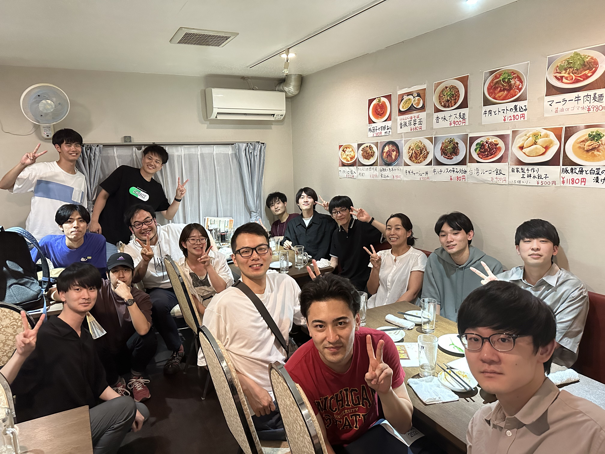
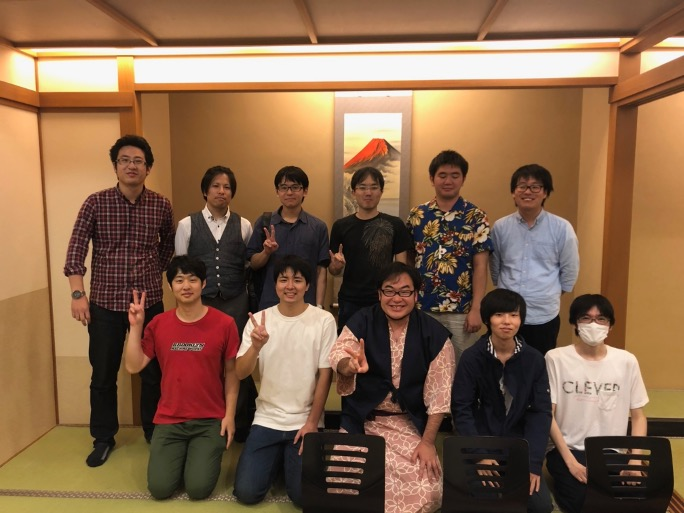

Welcome to Advanced Systems Group!
|  |  |

|
- Member
- Research
- Publications
- Contact
Various failures, including system stops and sensitive information leaks/loss, are reported even now although computer systems have become an infrastructure of daily life. ASG focuses on software systems and researches software technologies for attaining the dependability of computer systems.
Resilience-oriented Mechanisms against Software/Hardware Failures
Modern hardware devices are so complicated that their failures are difficult to deal with. The devices fail in diverse manners, rather than the conventional "fail-stop" manner; the devices operate even if a portion of them fails, leading to the unstable behavior of the computer systems. In addition, software systems consists of millions of lines of code, so it can be almost impossible to eliminate bugs, i.e., concurrency and heisen bugs, in its development phase. Accepting the existence of such errors, ASG investigates software solutions that enforce software systems to survive even software/hardware failures by gracefully handling them at runtime.
Effective/Efficient Resource Management
The primary goal of operating systems is to control applications and hardware devices effectively. ASG researches resource management policies and software mechanisms for emerging applications and ever-changing hardware devices. Our focus is on efficient and effective management policies and mechanisms for big data processing, cloud services, and emerging memory devices.
Novel Virtualization
System virtualization is common in data centers and end-users computers such as desktops, laptops, and embedded systems. The implicit assumption of the current virtualization mechanisms is that the resource set to virtualize is simple; hardware consists of CPU, memory, and storage, and applications are stateless. We seek how to virtualize new hardware devices such as accelerators and non-volatile memory and support modern big-memory applications. Our research expands the applicability of system virtualization and shows new applications.